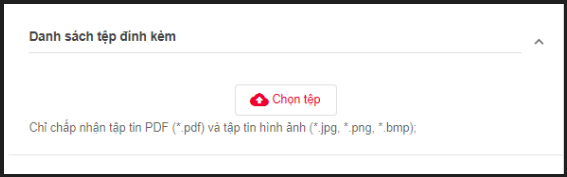

Lập hợp đồng
1. Tạo hợp đồng từ “Chọn tệp từ máy”
Mục đích: cho phép người dùng tạo hợp đồng từ file hợp đồng tự tạo sẵn đã lưu trên máy tính.
B1 : Đăng nhập vào tài khoản người dùng doanh nghiệp có mua dịch vụ bất kỳ >> Hợp đồng của tôi >> Lập hợp đồng >> Click “Chọn tệp từ máy”:

B2 : Chọn file hợp đồng đã chuẩn bị và lưu trên máy tính >> Nhập các thông tin hợp lệ >> Tiếp theo

Các thông tin cần nhập như sau:
- Loại hợp đồng: chọn loại hợp đồng mà người dùng muốn lập, trường hợp chưa có loại hợp đồng trong combobox người dùng liên hệ admin hoặc người dùng được phân quyền “Quản lý thông tin doanh nghiệp” của đơn vị để thực hiện thêm mới loại hợp đồng theo các bước sau trước khi lập hợp đồng:
- Trang chủ >> vào menu “Quản lý TT doanh nghiệp” >> Loại hợp đồng >> Thêm mới >> nhập thông tin “Tên loại hợp đồng” , “mã loại hợp đồng” >> bấm “Thêm loại hợp đồng”.

- Mã hợp đồng/Phụ lục: Nhập mã hợp đồng/Phụ lục, mã này phải là duy nhất
- Tên hợp đồng/Phụ lục: Nhập tên hợp đồng/Phụ lục
- Ngày hết hiệu lực: Nhập ngày hết hiệu lực của hợp đồng (nếu có)
- Hợp đồng cha đã ký (nếu có): nếu muốn lập phụ lục thì gõ tên hoặc mã hợp đồng để tìm hợp đồng cha. Trường này để xác định hợp đồng cha cho Phụ lục.
- Group Danh sách tệp đính kèm: đính kèm tệp tin nếu có, chỉ chấp nhận tệp đính kèm định dạng: .PDF, .JPG, .PNG, .BMP, tổng dung lượng file đính kèm không vượt quá 10MB.

- Group Các bên ký kết hợp đồng: Có 2 cách thiết lập luồng ký kết các bên:
Cách 1: Chọn trực tiếp các bên ký kết vào luồng ký kết theo các bước sau:
- Tại group “Các bên ký kết hợp đồng”: Nhập tên/ số giấy tờ/ Mã số thuế/ Email/ điện thoại của bên ký kết cần đưa vào danh sách ký kết hợp đồng >> hệ thống sẽ tự list ra doanh nghiệp/khách hàng tương ứng để chọn:
 - Cột TT ký : để xác định thứ tự xử lý hợp đồng giữa các bên, người dùng có thể thay đổi lại được thứ tự.
- Cột “Bên ký kết”: hiển thị tên doanh nghiệp/khách hàng của bên ký kết.
- Cột “Email”: hiển thị email của doanh nghiệp/ khách hàng tương ứng, có thể sửa lại Email với trường hợp bên ký kết là khách hàng cuối (không áp dụng sửa Email cho trường hợp bên ký kết là doanh nghiệp bên lập hợp đồng).
- Cột “Điện thoại”: hiển thị số điện thoại của doanh nghiệp/khách hàng tương ứng, có thể sửa lại “Điện thoại” với trường hợp bên ký kết là khách hàng cuối (không áp dụng sửa “Điện thoại” cho trường hợp bên ký kết là doanh nghiệp bên lập hợp đồng).
- Button xóa: để xóa chủ thể ký kết hợp đồng (nếu muốn).
- Cột TT ký : để xác định thứ tự xử lý hợp đồng giữa các bên, người dùng có thể thay đổi lại được thứ tự.
- Cột “Bên ký kết”: hiển thị tên doanh nghiệp/khách hàng của bên ký kết.
- Cột “Email”: hiển thị email của doanh nghiệp/ khách hàng tương ứng, có thể sửa lại Email với trường hợp bên ký kết là khách hàng cuối (không áp dụng sửa Email cho trường hợp bên ký kết là doanh nghiệp bên lập hợp đồng).
- Cột “Điện thoại”: hiển thị số điện thoại của doanh nghiệp/khách hàng tương ứng, có thể sửa lại “Điện thoại” với trường hợp bên ký kết là khách hàng cuối (không áp dụng sửa “Điện thoại” cho trường hợp bên ký kết là doanh nghiệp bên lập hợp đồng).
- Button xóa: để xóa chủ thể ký kết hợp đồng (nếu muốn).
Cách 2: Chọn từ nguồn đã được tạo sẵn (nếu doanh nghiệp lập hợp đồng/ hoặc cá nhân người dùng đã tạo sẵn quy trình ký của đơn vị/ cá nhân từ chức năng “Quy trình ký đơn vị” và “Quy trình ký” trên hệ thống), các bước như trong hình:

- Group Thiết lập luồng duyệt – ký hợp đồng nội bộ: cho phép thiết lập luồng ký – duyệt nội bộ của doanh nghiệp của tài khoản đang lập hợp đồng (nếu trong group “các bên ký kết hợp đồng” có chủ thể ký là doanh nghiệp của tài khoản đang đăng nhập). Có 2 cách để thiết lập luồng ký duyệt nội bộ:
Cách 1: Chọn trực tiếp người dùng/ phòng ban nội bộ vào luồng ký duyệt theo các bước sau:
- Gõ tên /email của người dùng/ phòng ban muốn đưa vào danh sách luồng ký duyệt nội bộ >> hệ thống sẽ tự list ra danh sách cần chọn:
 - Cột “TT”: hiển thị thứ tự xử lý hợp đồng nội bộ
- Cột “Thành viên”: hiển thị tên người dùng tham gia ký – duyệt hợp đồng
- Cột “Vai trò”: xác định vai trò “ký” hoặc “duyệt”của người dùng. Mặc định người cuối cùng trong danh sách sẽ giữ vai trò “Ký”, người dùng còn lại giữ vai trò “Duyệt” và ko sửa đổi được.
- Button xóa: để xóa danh sách người dùng tham gia ký – duyệt nội bộ (nếu muốn)
- Cột “TT”: hiển thị thứ tự xử lý hợp đồng nội bộ
- Cột “Thành viên”: hiển thị tên người dùng tham gia ký – duyệt hợp đồng
- Cột “Vai trò”: xác định vai trò “ký” hoặc “duyệt”của người dùng. Mặc định người cuối cùng trong danh sách sẽ giữ vai trò “Ký”, người dùng còn lại giữ vai trò “Duyệt” và ko sửa đổi được.
- Button xóa: để xóa danh sách người dùng tham gia ký – duyệt nội bộ (nếu muốn)
Cách 2: Chọn từ nguồn đã được tạo sẵn (nếu doanh nghiệp lập hợp đồng/ hoặc cá nhân người dùng đã tạo sẵn quy trình ký của đơn vị/ cá nhân từ chức năng “Quy trình ký đơn vị” và “Quy trình ký” trên hệ thống), các bước như trong hình:

B3: Cấu hình chân ký cố định cho các file hợp đồng (nếu cần). Các bước thực hiện như sau:
- Click vào icon “cấu hình chân ký” để mở màn hình cấu hình chân ký cố định:

- Trên màn hình cấu hình, chọn Trang hợp đồng cần cấu hình chân ký >> Click icon “Thêm chân ký”:

- Di chuyển chân ký muốn hiển thị về vị trí mong muốn bằng cách dùng chuột để kéo thả:

B4: Nhấn “lập hợp đồng” để hoàn tất việc lập hợp đồng. Hợp đồng sau khi lưu sẽ ở trạng thái “Nháp” trong màn hình danh sách:

2. Tạo hợp đồng từ “Chọn từ mẫu”
Mục đích: cho phép người dùng tạo hợp đồng từ mẫu hợp đồng đã cấu hình sẵn trên hệ thống.
B1 : Đăng nhập vào tài khoản người dùng doanh nghiệp có mua dịch vụ bất kỳ >> Hợp đồng của tôi >> Lập hợp đồng >> Click “Chọn từ mẫu”:

B2 : Tìm kiếm và chọn mẫu hợp đồng trong popup, sau đó bấm Lưu

Trường hợp chưa có mẫu hợp đồng trong popup, người dùng liên hệ admin hoặc người dùng được phân quyền “Quản lý thông tin doanh nghiệp” của đơn vị để thực hiện thêm mới mẫu hợp đồng theo các bước được mô trả trong mục “Thêm mới mẫu hợp đồng”.
B3: Nhập các thông tin hợp lệ >> Tiếp theo

Các thông tin cần nhập như sau:
- Tên hợp đồng/Phụ lục: Nhập tên hợp đồng/Phụ lục
- Mã hợp đồng/Phụ lục: Nhập mã hợp đồng/Phụ lục, mã này phải là duy nhất
- Ngày hết hiệu lực: Nhập ngày hết hiệu lực của hợp đồng (nếu có)
- Group Danh sách tệp đính kèm: đính kèm tệp tin nếu có, chỉ chấp nhận tệp đính kèm định dạng: .PDF, .JPG, .PNG, .BMP, tổng dung lượng file đính kèm không vượt quá 10MB.

- Group Các bên ký kết hợp đồng: Có 2 cách thiết lập luồng ký kết các bên:
Cách 1: Chọn trực tiếp các bên ký kết vào luồng ký kết theo các bước sau:
- Tại group “Các bên ký kết hợp đồng”: Nhập tên/ số giấy tờ/ Mã số thuế/ Email/ điện thoại của bên ký kết cần đưa vào danh sách ký kết hợp đồng >> hệ thống sẽ tự list ra doanh nghiệp/khách hàng tương ứng để chọn:
- Cột TT ký : để xác định thứ tự xử lý hợp đồng giữa các bên, người dùng có thể thay đổi lại được thứ tự.
- Cột “Bên ký kết”: hiển thị tên doanh nghiệp/khách hàng của bên ký kết.
- Cột “Email”: hiển thị email của doanh nghiệp/ khách hàng tương ứng, có thể sửa lại Email với trường hợp bên ký kết là khách hàng cuối (không áp dụng sửa Email cho trường hợp bên ký kết là doanh nghiệp bên lập hợp đồng).
- Cột “Điện thoại”: hiển thị số điện thoại của doanh nghiệp/khách hàng tương ứng, có thể sửa lại “Điện thoại” với trường hợp bên ký kết là khách hàng cuối (không áp dụng sửa “Điện thoại” cho trường hợp bên ký kết là doanh nghiệp bên lập hợp đồng).
- Button xóa: để xóa chủ thể ký kết hợp đồng (nếu muốn).
Cách 2: Chọn từ nguồn đã được tạo sẵn (nếu doanh nghiệp lập hợp đồng/ hoặc cá nhân người dùng đã tạo sẵn quy trình ký của đơn vị/ cá nhân từ chức năng “Quy trình ký đơn vị” và “Quy trình ký” trên hệ thống), các bước như trong hình:
- Group Thiết lập luồng duyệt – ký hợp đồng nội bộ: cho phép thiết lập luồng ký – duyệt nội bộ của doanh nghiệp của tài khoản đang lập hợp đồng (nếu trong group “các bên ký kết hợp đồng” có chủ thể ký là doanh nghiệp của tài khoản đang đăng nhập). Có 2 cách để thiết lập luồng ký duyệt nội bộ:
Cách 1: Chọn trực tiếp người dùng/ phòng ban nội bộ vào luồng ký duyệt theo các bước sau:
- Gõ tên /email của người dùng/ phòng ban muốn đưa vào danh sách luồng ký duyệt nội bộ >> hệ thống sẽ tự list ra danh sách cần chọn:
- Cột “TT”: hiển thị thứ tự xử lý hợp đồng nội bộ
- Cột “Thành viên”: hiển thị tên người dùng tham gia ký – duyệt hợp đồng
- Cột “Vai trò”: xác định vai trò “ký” hoặc “duyệt”của người dùng. Mặc định người cuối cùng trong danh sách sẽ giữ vai trò “Ký”, người dùng còn lại giữ vai trò “Duyệt” và ko sửa đổi được.
- Button xóa: để xóa danh sách người dùng tham gia ký – duyệt nội bộ (nếu muốn)
Cách 2: Chọn từ nguồn đã được tạo sẵn (nếu doanh nghiệp lập hợp đồng/ hoặc cá nhân người dùng đã tạo sẵn quy trình ký của đơn vị/ cá nhân từ chức năng “Quy trình ký đơn vị” và “Quy trình ký” trên hệ thống), các bước như trong hình:
B4: Điền nội dung hợp đồng: nhập nội dung các trường vào cột “giá trị”, “ghi chú” (nếu có). Sau đó bấm Tiếp theo.

B5: Xem trước hợp đồng: tại bước này, có thể xem trước hợp đồng, cấu hình chân ký.
- Xem trước hợp đồng

- Cấu hình chân ký: các bước thực hiện như sau:
- Chọn biểu tượng Cấu hình chân ký

- Chọn khách hàng vào chân ký tương ứng (nếu có)

B6: Nhấn “Lập hợp đồng” để hoàn tất việc lập hợp đồng. Hợp đồng sau khi lưu sẽ ở trạng thái “Nháp” trong màn hình danh sách